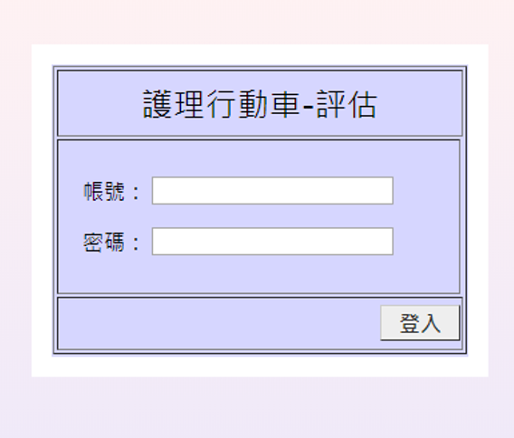
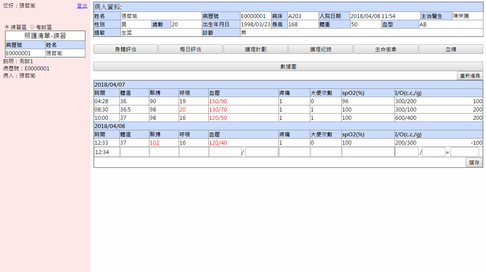
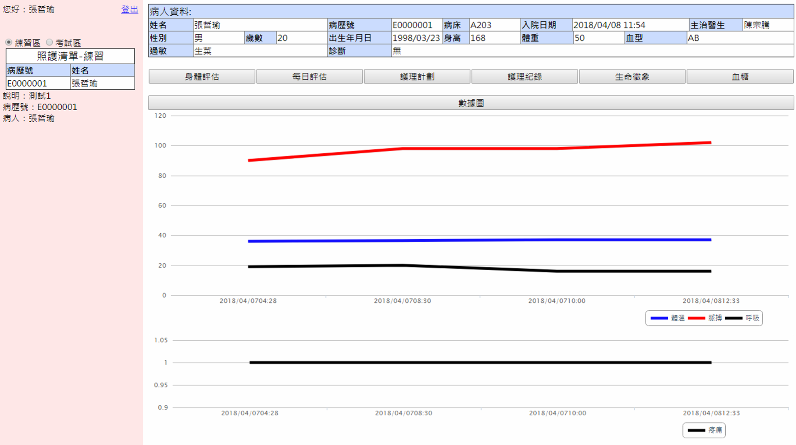
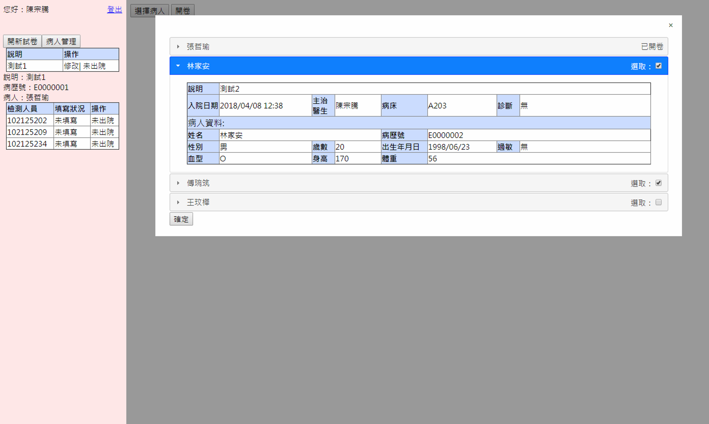
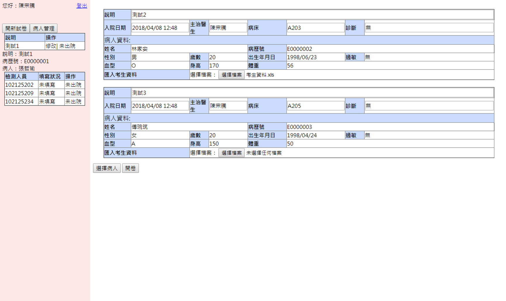
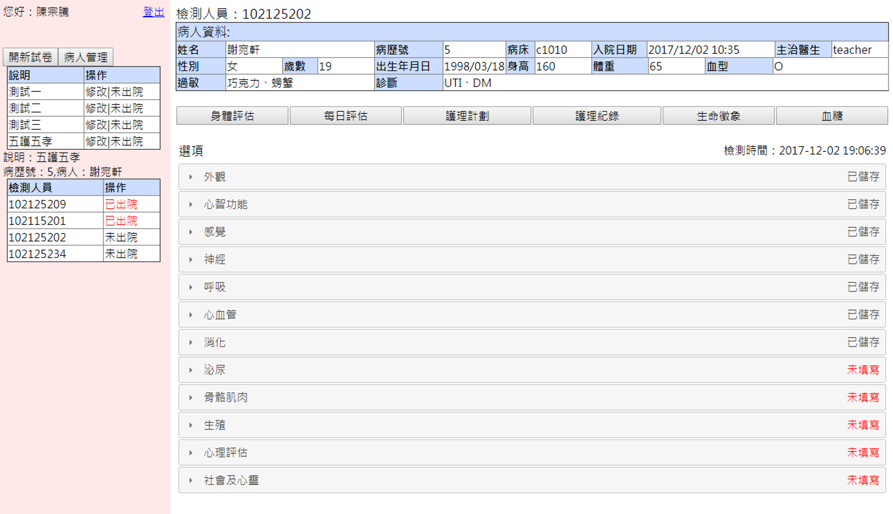
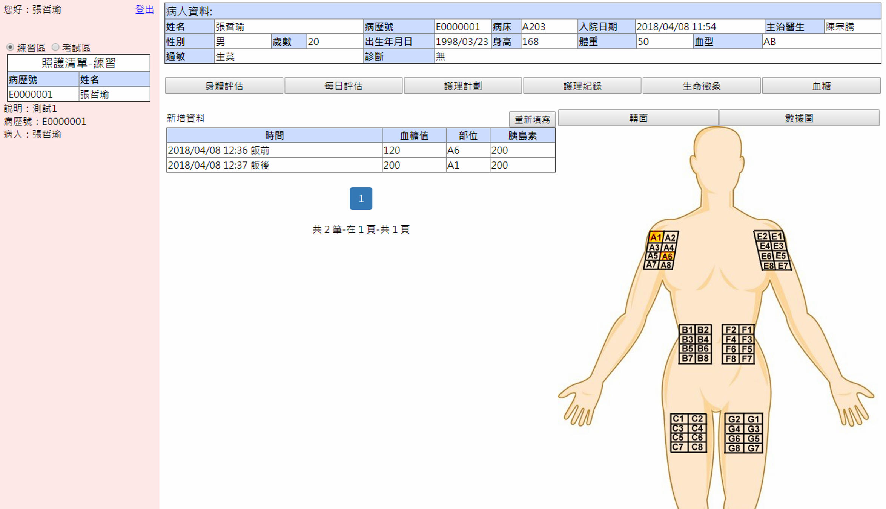
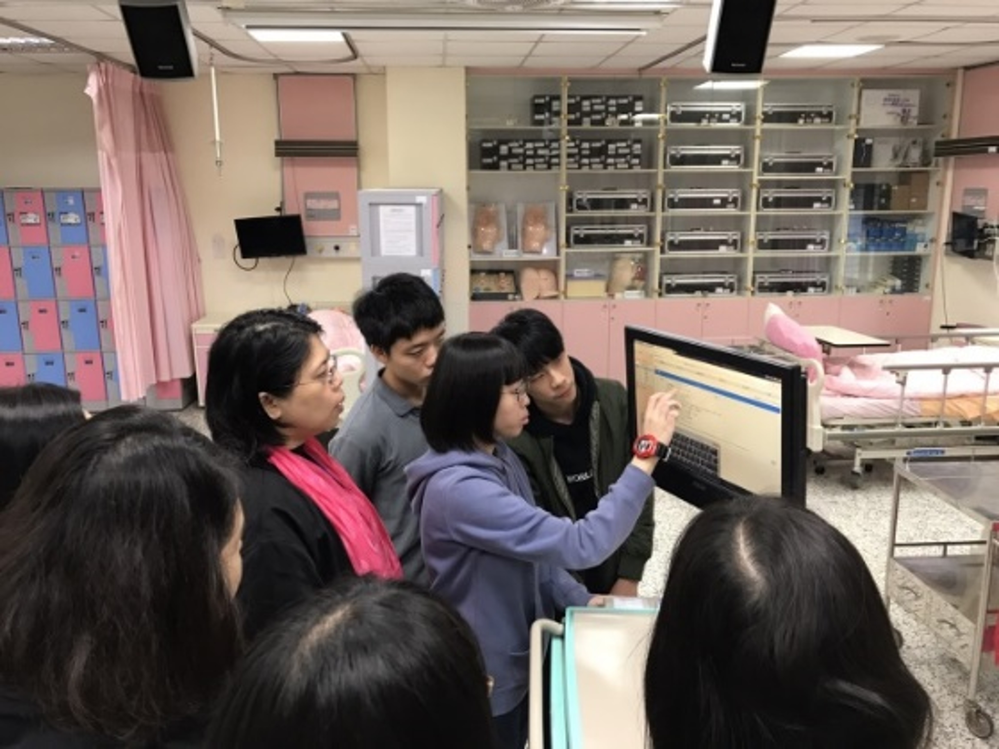

護理工作車(評估、護理計畫)
仿照實際的護理工作車，使護理科學生在進入醫院實習前能熟知流程的操作，並在實習過程中或結束後能有一個練習的平台，並加上監控台老師能夠了解學生在使用系統上的操作狀況。

開發團隊
人數
2 前端工程師
1 後端工程師
時程
2017/8~2018/3
負責事項
網頁介面設計
資料庫建立、讀取
運用技術
系統功能
學生
身體評估
護理計畫
生命徵象
每日評估
護理紀錄
血糖
老師
病人管理
開新試卷
查看學生填寫狀況
開發成果
由於入院前需要進行多個表格需要填寫所以套入jQuery所提供風琴夾樣式進行介面上的顯示以及HighchartTable做資料視覺化

生命徵象紀錄

生命徵象數據圖
利用Excel快速匯入考生資料，加快老師操作時間

填寫病人資料

匯入考生資料

查看學生作答狀況

血糖紀錄
後記
受到護理科的委託進行開發此系統，透過不斷的跟護理科開會統論了解系統內容，系統包含了身體評估、每日評估、護理計畫、護理紀錄、生命徵象、血糖等六大項學生操作功能，以及病人管理、監看填寫狀況等附加功能。由於所要建的表格眾多且需要存的欄位相對也很多，在製作上非常耐心的將每一個要加入到資料庫的欄位加上ID並串接PHP進MySQL資料庫，這可能是這系統最麻煩的地方了。

Link
五專畢業專題製作